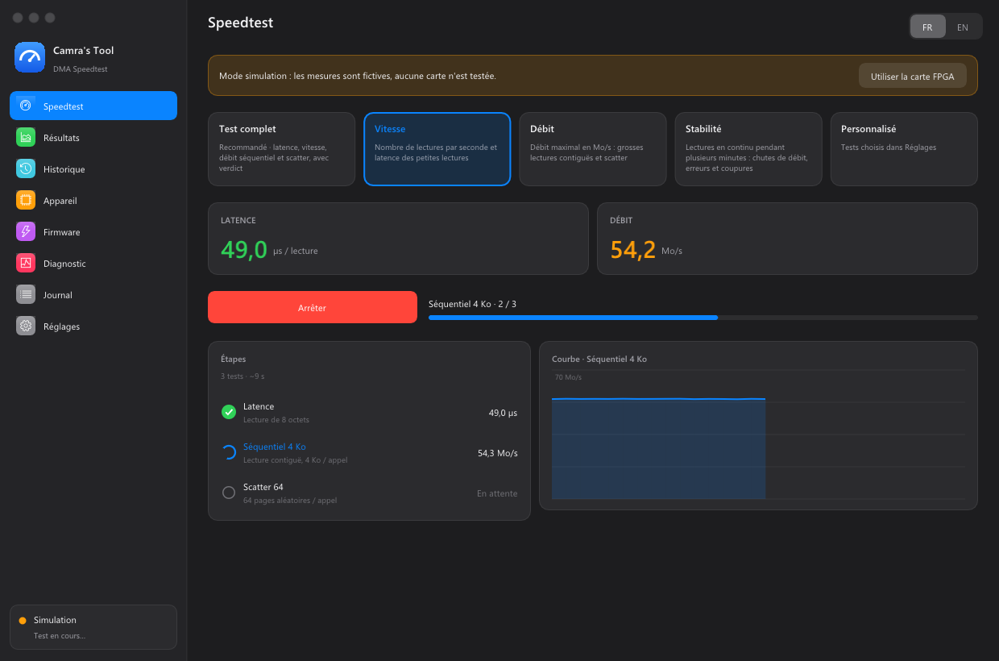

Camra's Tool
Teste, diagnostique et flashe une carte DMA (FT601 / LeechCore) depuis Windows 10 ou 11, 64 bits. Rien d'autre à installer.
Test, diagnose and flash a DMA card (FT601 / LeechCore) from Windows 10 or 11, 64-bit. Nothing else to install.
Télécharger pour WindowsDownload for Windows
Le lanceur installe la dernière version, crée les raccourcis et propose chaque mise à jour.
Sans lanceur : l'application seule · toutes les versions et leurs nouveautés
The launcher installs the latest version, creates the shortcuts and offers each update.
Without the launcher: the app alone · all versions and release notes

Ce que fait l'application
What the app does
- Mesure la latence, le débit et la stabilité, et explique ce qui limite la vitesse.
- Trouve pourquoi une carte n'est pas détectée et installe les pilotes manquants.
- Compare les câbles, les ports USB et les algorithmes FPGA.
- Garde l'historique de vos résultats, à partager en image ou sur Discord.
- Measures latency, throughput and stability, and explains what limits the speed.
- Finds why a card is not detected and installs missing drivers.
- Compares cables, USB ports and FPGA algorithms.
- Keeps a history of your results, to share as an image or on Discord.
Installation
Installation
- Branchez la carte DMA en USB 3 sur ce PC. Le PC cible doit être allumé.
- Fermez les autres logiciels DMA.
- Ouvrez le fichier téléchargé : l'application se connecte et vous guide.
- Plug the DMA card into a USB 3 port of this PC. The target PC must be on.
- Close other DMA software.
- Open the downloaded file: the app connects and guides you.
À savoir
Good to know
L'exe n'est pas signé numériquement : Windows peut afficher un avertissement SmartScreen. Ne téléchargez que depuis cette page ou depuis GitHub. Le flash du firmware n'a pas encore été validé sur une carte réelle.
The exe is not code-signed: Windows may show a SmartScreen warning. Download only from this page or from GitHub. Firmware flashing has not been validated on a real card yet.